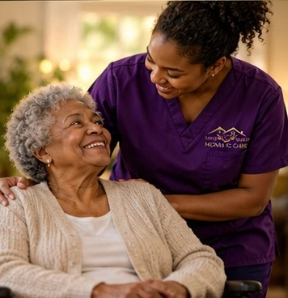
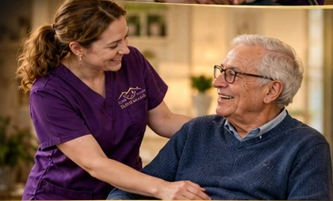

Personal Care
Gentle, respectful help with bathing, grooming, dressing and mobility. We protect your dignity while keeping you safe and comfortable.
Learn MorePersonalized, non-medical in-home care for seniors and aging adults, people recovering from surgery or a hospital stay, and individuals with developmental disabilities, delivered by Ohio DoDD-certified caregivers who treat your family like their own.

Safe Haven Home Care started with one belief: everyone deserves to live with dignity, choice and purpose in the place they call home. For years, we've supported individuals with developmental disabilities and their families across Greater Cincinnati as an Ohio DoDD-certified provider.
That certification holds us to higher standards than most home care agencies. Now we bring the same care and accountability to seniors and to anyone recovering from surgery who needs a steady hand at home.
Learn More About Us
Our Mission at Safe Haven Home Care is to support independence and enrich the lives of the individuals we serve. Through compassionate, person-centered non-medical care, we empower seniors, those recovering from surgery, and individuals with developmental disabilities across Greater Cincinnati to live safely, comfortably, and with true dignity at home.
Stay in the home you love, on your own terms. We help with daily routines, meals and companionship so you can age in place with confidence, and your family can stop worrying.
Call for a free quoteCome home from the hospital to a caregiver ready to help. We handle bathing, meals, errands and a watchful eye while you heal, so you can focus on getting back on your feet and lower your risk of setbacks.
Call for a free quotePerson-centered support that builds skills, confidence and community connection. As an experienced Ohio DoDD-certified provider, we partner with individuals, families and SSAs to bring each person's plan to life.
Waiver servicesGentle, respectful help with bathing, grooming, dressing and mobility. We protect your dignity while keeping you safe and comfortable.
Learn MoreReal conversation, shared hobbies and outings around town. We ease loneliness and bring joy back into everyday life.
Learn MoreCaring for a loved one is a full-time job, and everyone needs a break. We give senior families and DoDD waiver families trusted relief for a few hours, overnight or longer.
Learn MoreMeal prep, medication reminders, light housekeeping and errands. We keep the household running so you can focus on living well, or on healing.
Learn MoreCertified support for individuals on Ohio's IO, Level One and SELF waivers. We work alongside families and SSAs to deliver person-centered services that honor each individual's goals.
Learn MoreHomemaker/Personal Care where the individual and family lead. You help choose caregivers and shape the schedule, and we handle the training and compliance.
Learn MoreOur DSPs are Med 1 and Med 2 certified through Ohio DoDD. The right medication at the right time, given by staff who know the individual, with every dose documented.
Learn MoreRound-the-clock support from rotating caregivers. Someone alert and familiar is always in the home, day and night.
Learn MoreSafe, friendly rides to appointments, errands and outings, with a caregiver who stays by your side.
Learn MoreWe hire for heart and train for excellence. Every caregiver is carefully screened, thoroughly trained and matched to your personality and needs.
No two people are alike, and no two care plans should be. We build yours around your routines, preferences and goals, then adjust it as your needs change.
As an Ohio DoDD-certified provider, we meet rigorous state standards for screening, training and documentation. You get that accountability no matter who we serve.
Whether you're planning ahead for a parent, preparing for surgery, or looking for a DoDD provider you can trust, we're here to help. Your consultation is free and there's no obligation.